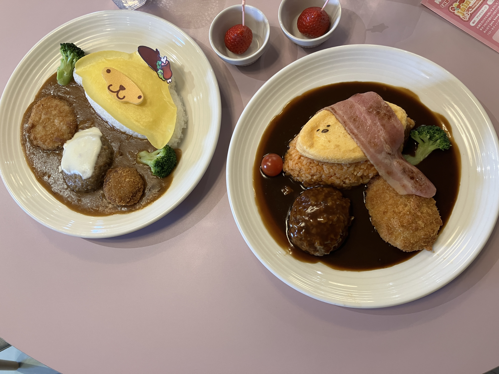
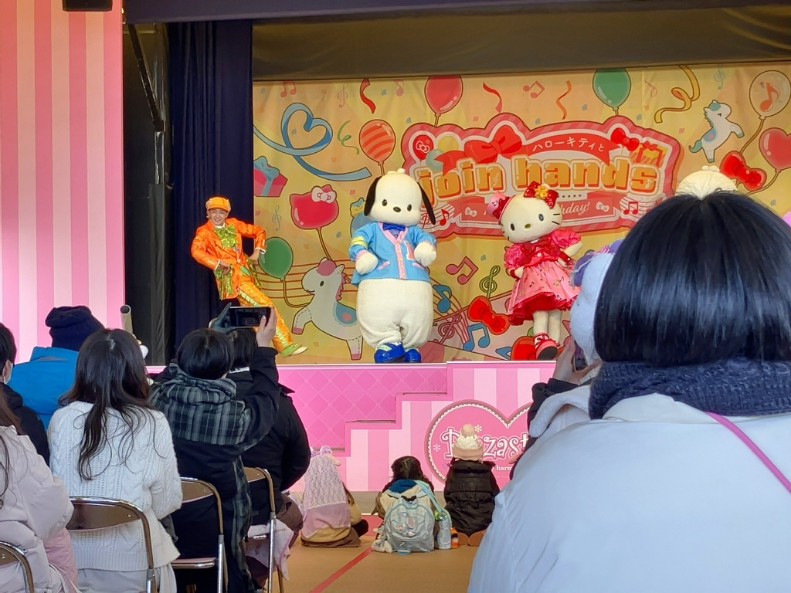
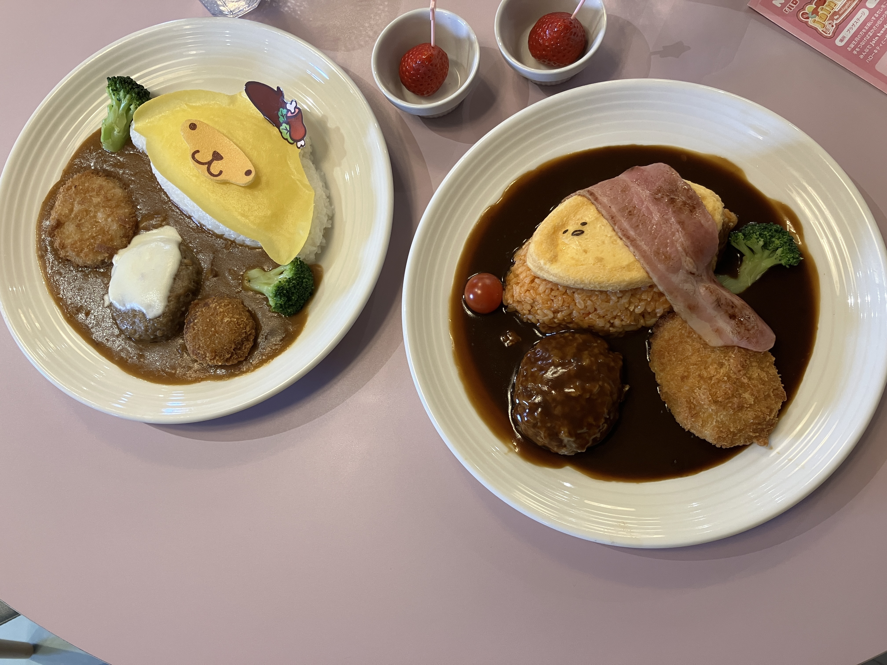
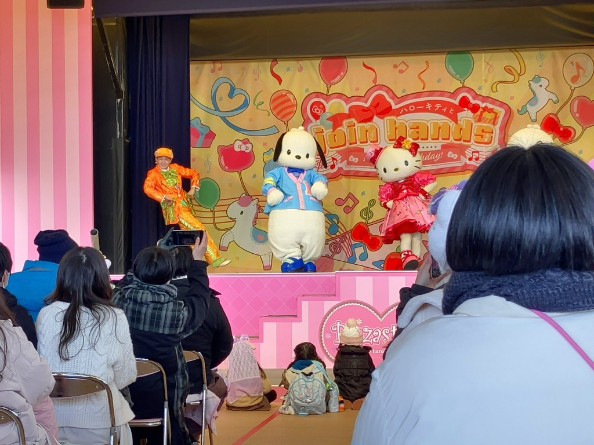

念願のハーモニーランド
ハーモニーランドはサンリオのテーマパーク。私はサンリオのキャラクターが好きなのでこれてとても嬉しかった。
推しのポチャッコともグリーティングできたし最高の瞬間だった。また絶対いく。
 



大分名物のだんご汁
だんご汁で有名なお店の甘味茶屋というお店に行った。
だんご汁とは小麦粉を練って作った団子を団子を野菜と一緒に味噌仕立てで煮込んだものである。
給食で食べた以来だったのだがあの頃の記憶がよみがえってきてとても美味しかった。
大分は知り合いがいるのでまたいく機会があれば、ハーモニーランドと甘味茶屋によりたい。